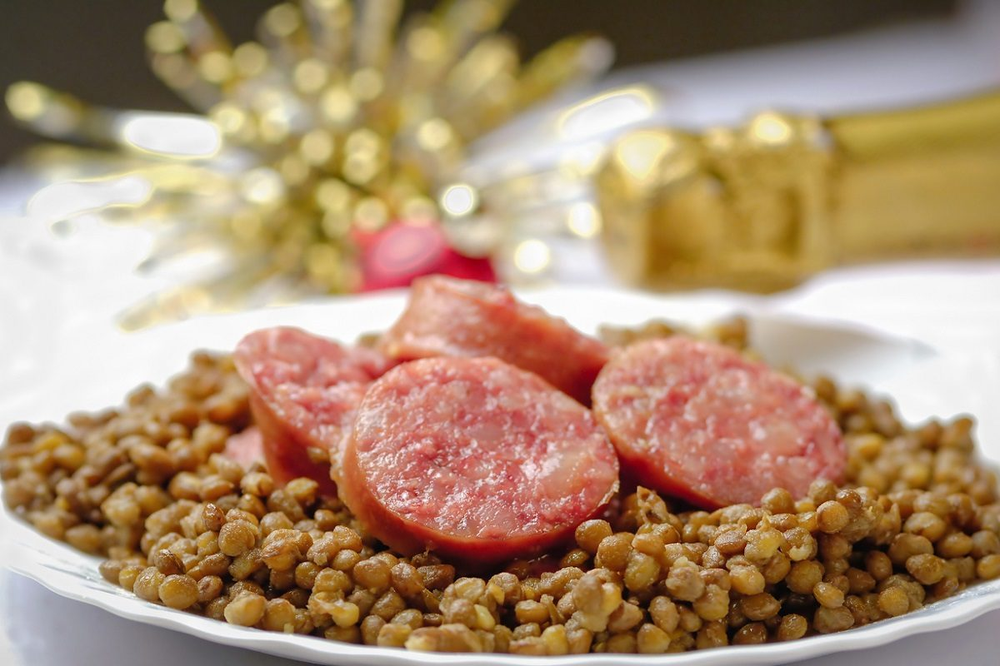

Cotechino con Lenticchie Recipe

Description
This hearty and satisfying dish is traditionally eaten on New Year's to bring abundance and fortune. Cotechino is an Italian fresh pork sausage. It is creamy and delicate in flavor. It is sometimes sold precooked or boiled but the best ones are fresh. If you can't find cotechino a high quality fresh pork sausage flavored with nutmeg, cloves and pepper will suffice.
Ingredients
- 1 pound cotechino
- 1 onion, chopped
- 1 bay leaf
- 8 whole black peppercorns
- 4 cups water
Steps
- Pierce the cotechino with a fork in several places. In a large pot place the cotechino, chopped onion, 1 bay leaf, peppercorns and thyme. Cover with water and bring all to a boil. Reduce heat to low and let simmer for 45 to 50 minutes, if using fresh cotechino (for precooked cotechino, simmer for 20 minutes).
- In a large pot combine the lentils, quartered onion, garlic, bay leaf, carrot and salt and pepper to taste. Cover with the 4 cups of water. Bring all to a boil; cover, reduce heat to low and let simmer for 40 to 45 minutes or until lentils are soft. Add additional water if necessary.
- Remove the onion, garlic, bay leaf and carrot; discard. Spoon the lentils into a serving dish, drizzle with olive oil and slice rounds of the cotechino over the top. Sprinkle with fresh chopped parsley and serve.
Return to main page